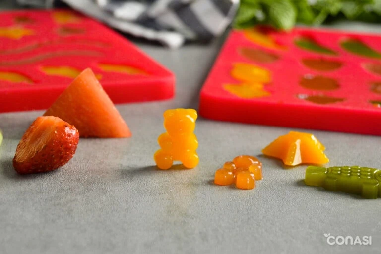
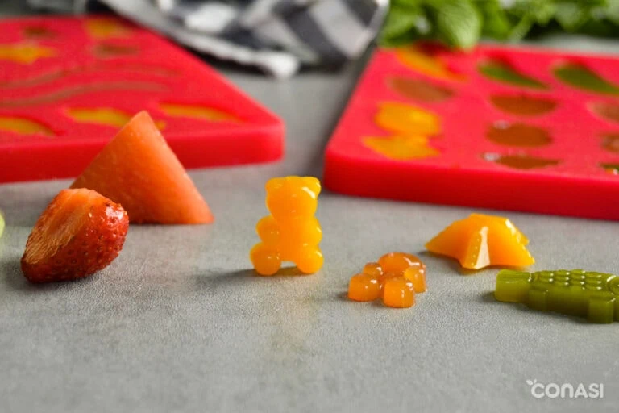

Mommitablog
Blog de una mama migrante.
"Porque en este hermoso viaje de la maternidad, nunca tienes que estar sola."
Recetas
Recetas saludables
¡Alimentar a los peques no siempre es fácil, lo sé! Pero aquí te compartiré algunas recetas saludables y divertidas que harán que la hora de comer sea una aventura para ti y tus niños. ¡Prepárate para transformar verduras en héroes, frutas en postres mágicos y comidas en momentos inolvidables!
Gomitas caseras sin azúcar

Jugosas, coloridas y ¡llenas de vitaminas! Estas gominolas caseras son la alternativa vegana y 100% natural a las golosinas comerciales cargadas de azúcares y gelatina animal. Nuestras chuches veganas se elaboran con zumo de frutas, endulzante y agar-agar.
Utensilios
- Extractor de zumos
- Cuchillo pequeño o puntilla
- Tabla de cortar
- Bol de cristal mediano
- Olla mediana
- Batidor de varillas de silicona
- Bol pequeño
- Moldes de gominolas
Ingredientes
- 10 fresas
- 4 cucharadas sirope de agave azul crudo según maduración de la fruta
- cucharaditas agar agar en polvo
Preparacion
- Cortar las fresas en trozos y licuar y extraer todo el jugo sin pulpa
- Mezclar 2 cucharaditas de agar-agar con la mitad del zumo obtenido. No deben quedar grumos y el agar-agar debe estar completamente disuelto.
- Poner la mezcla a fuego medio en una olla antiadherente y remover constantemente con unas varillas.
- Cuando comience a tomar solidez, ir añadiendo el resto del jugo y el sirope de agave según el dulzor de la fruta. Seguir removiendo hasta ver que está totalmente integrado y que vuelve a coger densidad. Quitar del fuego. Verter la mezcla con cuidado y con ayuda de una cuchara en los moldes de gomitas. Dejar reposar a temperatura ambiente 30 minutos aproximadamente.<>
- Una vez desmoldadas, las chuches se pueden cubrir con monk fruit.
 


Torta de chocolate sin azucar, ni harinas procesadas
¡Prepárate para conocer la torta de chocolate que cambiará tus d√≠as! üç´ Esta delicia es un sue√±o hecho realidad: sin azúcar a√±adida, sin harinas procesadas, ¡y con un sabor que te dejará sin palabras! Perfecta para quienes buscan un capricho saludable sin renunciar al gusto intenso del chocolate. Cada bocado esponjoso y lleno de sabor demuestra que puedes darte un gusto sin remordimientos. ¬øListo para una explosi√≥n de sabor? Porque esta torta tiene todo lo que amas, ¡y nada de lo que no!.
Ingredientes
- 1 1/2 cups Harina de Almendra
- 1/4 cups Cacao Powder
- 2 1/4 tsp Baking Powder
- 1/2 tsp Sal
- 1/3 cups Leche de almendra
- 3 Huevos
- 1/3 cups Erythritol
- 1 1/2 tsp Extracto Vainilla
Instrucciones
- Pre-calienta el horno a 350 grados y prepara un molde puede ser en layers
- En un envase, añade todos los ingredientes secos y aparte los ingredientes líquidos comenzando con los huevos
- Vierte el envase con los ingredientes sólidos a los líquidos, bate hasta que estén integrados. Puedes añadir chips (sin azúcar) o almendras a gusto.
- Vierte en el envase y hornea por 15 minutos o hasta que el palillo salga limpio.
- Una vez horneado, decora con el buttercream, usa la creatividad con almendras o chips encima
Ahora a disfrutar todos en familia de un delicioso y saludable postre!
Comida Salada
Descubre platos salados que sorprenderán a tus invitados.
Recetas Rápidas
Ideas rápidas y sabrosas para cuando tienes poco tiempo.